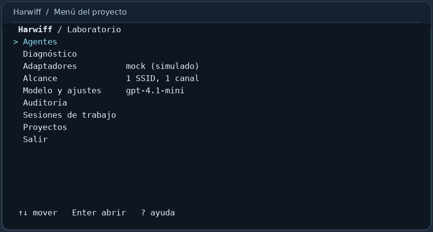

Versión estable Linux x86-64
Seguridad de
agentes de IA.
Infraestructura de red
Inspecciona el Wi-Fi de tu equipo en modo de solo lectura. Conversa con el agente y revisa las herramientas y la evidencia de cada inspección.
Instalar por terminal
curl -fsSLo harwiff-install.sh \
https://github.com/glender222/wifi-diagnostico-harness/releases/latest/download/install.sh \
&& bash harwiff-install.shPaquete autónomo para Linux x86-64 con glibc
Inspecciona tu Wi-Fi
Consulta el inventario de tu equipo en solo lectura, sin Docker.
mkdir -p ~/laboratorio-wifi
cd ~/laboratorio-wifi
harwiff- Elige Inicializar esta carpeta.
- Abre Adaptadores y elige tu radio para ver sus interfaces y capacidades.
- Usa Seleccionar para Agentes para asociar la interfaz al chat.
↑↓ Mover Enter Abrir Esc Volver

Documentación
Consulta los requisitos y dónde encontrar lo que genera Harwiff.
Leer la guía completa en GitHubInfraestructura Wi-Fi
Adaptadores muestra los radios e interfaces detectados por Linux. La inspección de solo lectura admite la tarjeta que sostiene la ruta principal. El diagnóstico físico con OpenSandbox tiene su propio preflight.
Agentes y alcance
Conecta un proveedor y un modelo compatible desde Modelo y ajustes. En Agentes → Nueva conversación, pregunta por tu equipo y revisa los resultados en Tab → Herramientas. Los datos de asociación requieren una red autorizada.
Ver la guía del agenteInformes y auditoría
Los informes e historiales se guardan en la carpeta .harwiff/ del proyecto. En Auditoría puedes abrir el resultado, sus referencias y el JSON del registro.